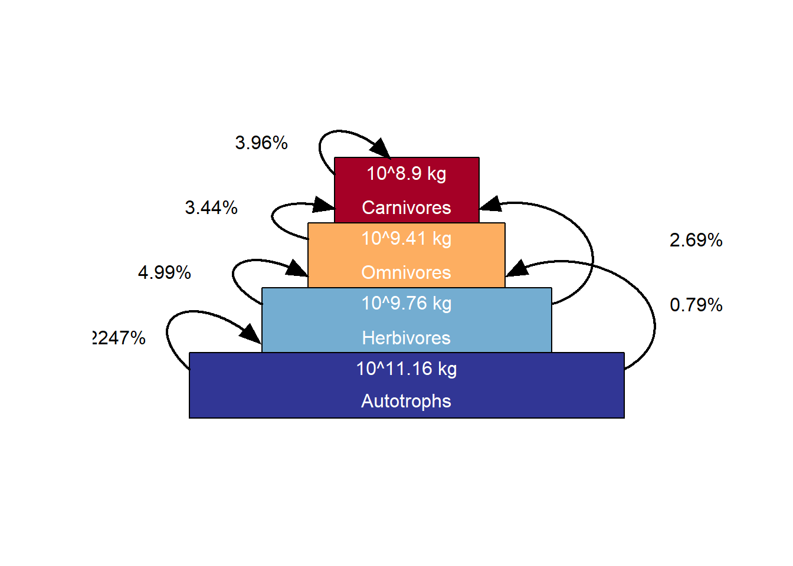
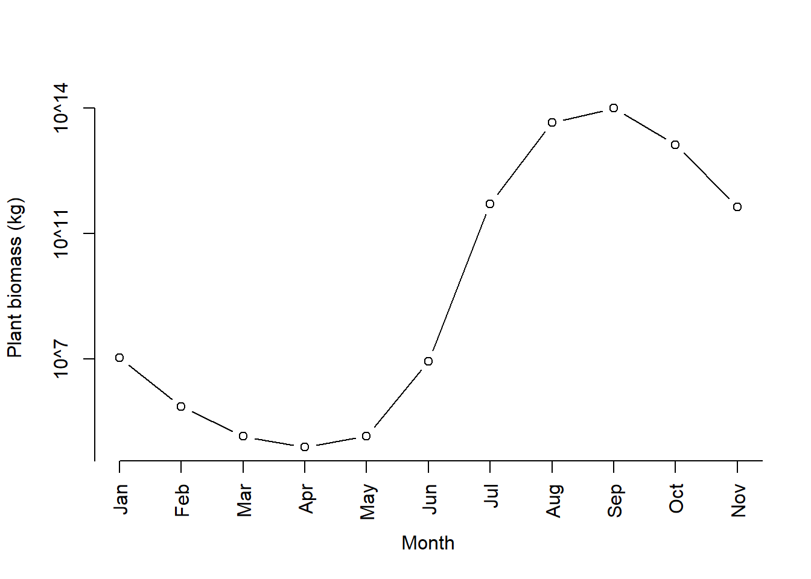
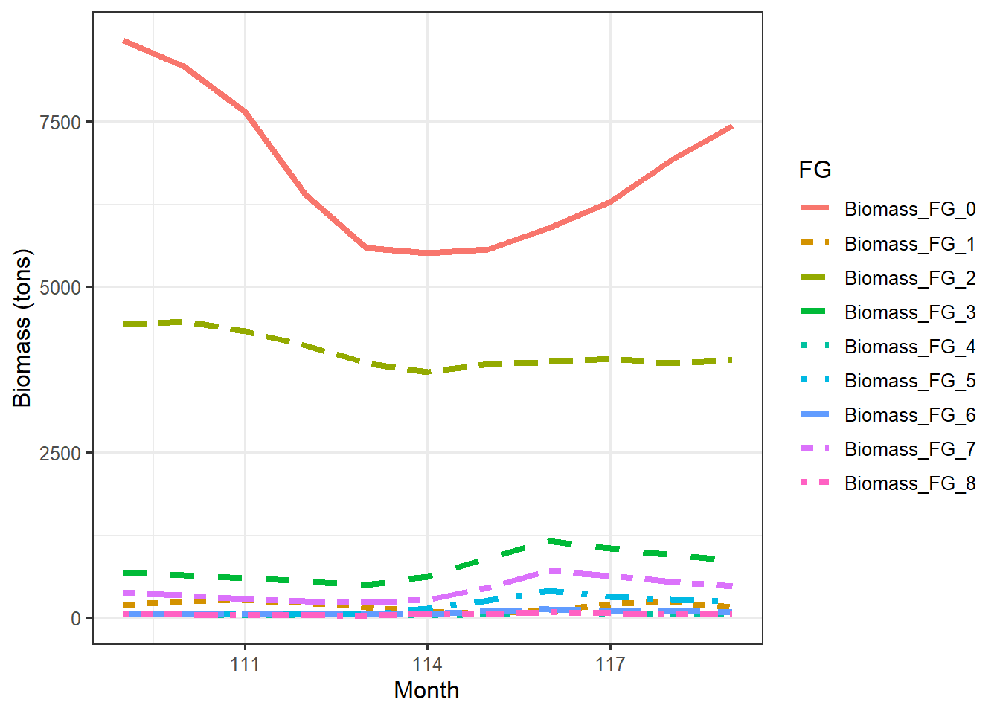

Chapter 7 Trophic pyramids
Exploring the biomass time series produced from running a 10 year spinup for 16 grid cells in central Norway.
This page was last updated 2022-01-11 21:23:37
% loading inputs from: temp/madingley_outs_22_12_21_08_31_24/
The autotrophic or plant biomass is 10^15.17 kg. Written in a more familiar different way, that is the same as
% [1] 1479.108Gigatons (Gt).
Where does this number come from? I can recreate the number by summing the biomass for the whole last year of the simulation:
biom <- sum(mdata2$time_line_stocks$TotalStockBiomass[
mdata2$time_line_stocks$Year==max(mdata2$time_line_stocks$Year) ])
#Converted to base10 scientific
paste0("10^", round(
log10(biom), 2))% [1] "10^15.17"According to Wikipedia the total biomass of the world is about 1 000 billion tons (assuming 50% C). This is the same as 1 000 gigatons Gt. A different source says 500 Gt for the total world biomass.
Our estimate for the plant biomass of south Norway is therefore about 50% bigger than the total biomass of the planet!
Hoeks et al 2020 Glo. Eco. Bio. got comparable values to us when using the same R package and same study extent (4x4 degrees). If our numbers are wrong in thi example, then their numbers must be wrong as well.
Harfoot et al 2014 got much lower values using the C# version of Madingley. For a single grid cell (aseasonal ecosystem in tropical Uganda) they got 24 611 tons of plant biomass. If we multiply that with 16 to become comparable to our study extent, and convert it to Gt, we get
% [1] 0.000393776This is much, much lower than our estimate.
This is roughly the script that produces the trophic pyramid figure above (plot_trophicpyramid())
years <- 0
tl <- mdata2$time_line_stocks
tl <- aggregate(tl, by = list(tl$Year), FUN = sum)
tl <- tl[(nrow(tl) - length(years) + 1):nrow(tl), ]
(biom <- mean(tl$TotalStockBiomass))I suspect that the unit in mdata2$time_line_stocks is grams, and not kg. As we will see below, it’s grams for the heterotrofic cohorts. But even so, the numbers are way off.
How do our monthly estimates compare to Harfoot et al 2014. This is our maximum monthly estimate in the last year of the spin up, converted to Gt:
(temp <- max(
mdata2$time_line_stocks$TotalStockBiomass[
mdata2$time_line_stocks$Year==max(mdata2$time_line_stocks$Year) ])/1000/10^9)% [1] 214.235This estimate is still too big. Is we assume the the unit should’ve been g and not kg, we still get 0.2 Gt (compare with 0.0004 in Harfoot et l 2014).
There must be more to this than the g and kg mistage and the fact that the biomass is an accumulated monthly sum.
But why does the R function use an accumulated monthly sum? I can not think of a good reason.
It makes more sense to me to just get the standing biomass for a given month, perhaps the maximum monthly value. In our area in Norway the plant biomass peaks in September. 
What about the herbivore data. How are those biomass estimates that are reported in the trophic pyramid above calculated? In the trophic pyramid we see a value of about 0.09 Gt:
% [1] 0.09332543Harfoot et al 2014 report for their study system (converted to 16 grid cells and to Gt)
% [1] 3.84e-06We have a similar situation here.
Here is the heterotrophic biomass over the last year of our simulation
dat <- mdata2$time_line_cohorts
dat <- dat[dat$Year == max(dat$Year),] #subset to only the last year
datm <- data.table::melt(dat,
id.vars = c("Year", "Month"),
variable.name = "FG",
value.name = "biomass")% Warning in data.table::melt(dat, id.vars = c("Year", "Month"), variable.name
% = "FG", : The melt generic in data.table has been passed a data.frame and will
% attempt to redirect to the relevant reshape2 method; please note that reshape2
% is deprecated, and this redirection is now deprecated as well. To continue using
% melt methods from reshape2 while both libraries are attached, e.g. melt.list,
% you can prepend the namespace like reshape2::melt(dat). In the next version,
% this warning will become an error.datm$tons <- datm$biomass/1000000 # assuming the unit is g, so i divide by 10^6 to give tons
ggplot(dat = datm, aes(x = Month, y = tons,
colour = FG,
linetype=FG))+
geom_line(size=1.5)+
theme_bw(base_size = 12)+
ylab("Biomass (tons)")
Now, let me try to recreate the number in the trophic pyramid. Combining the herbivores
datherb <- datm[datm$FG == "Biomass_FG_0" |
datm$FG == "Biomass_FG_3" |
datm$FG == "Biomass_FG_6" ,]Summed biomass across all months in the raw/unknown units
% [1] 83650279400If we assume that units are in grams, this is the same as
% [1] 0.08365028Gt, which is quite close the number we were aiming for.
It may look like the heterotrophic biomass and the autrophic biomass is calculated in the same way.
The ration between autrophic and herbivore biomass is in our Norwegian case study
% [1] 6.309573e-05, or 0.000063,
and in Harfoot et al 2014 it is
% [1] 0.009759943Norway apparently has a much higher autrophic biomass compared to heterotrophic biomass, but I don’t think that is the reality